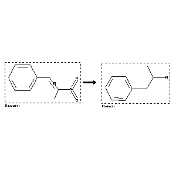

 |
| FA | RX(1); FLST(1); RX(1) |
Reaction (1 of 1)
| Reaction ID | 1553468 |
| Reactant BRN | 1072571 |
| Reactant | 2-nitro-1t-phenyl-propene |
| Product BRN | 507867 |
| Product | 1-methyl-2-phenyl-ethylamine |
| No. of Reaction Details | 1 |
Reaction Details (1 of 1)
| Reaction Classification | Preparation |
| Reagent | Clostridium innocuum, medium for anaerobic bacteria |
| Time | 3 day(s) |
| Temperature | 37 |
| Citation Pointer | 5538919; Journal; Mori, Akira; Ishiyama, Ikuo; Akita, Hiroyuki; Suzuki, Kunio; Mitsuoka, Tomotari; Oishi, Takeshi; CPBTAL; Chem.Pharm.Bull.; EN; 38; 12; 1990; 3449-3451; |
Reference (1 of 1)
| Citation Number | 5538919 |
| Document Type | Journal |
| Authors | Mori, Akira; Ishiyama, Ikuo; Akita, Hiroyuki; Suzuki, Kunio; Mitsuoka, Tomotari; Oishi, Takeshi |
| CODEN | CPBTAL |
| Journal Title | Chem.Pharm.Bull. |
| Language Code | EN |
| (Series) Volume | 38 |
| Number | 12 |
| Publication Year | 1990 |
| Page | 3449-3451 |